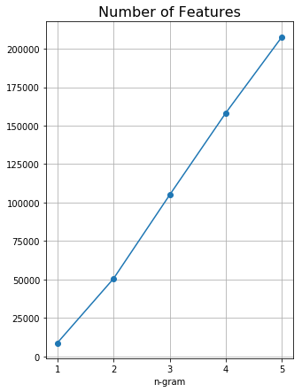
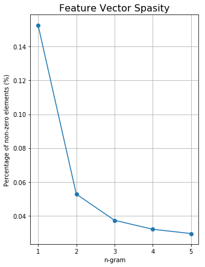
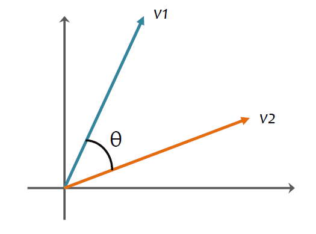
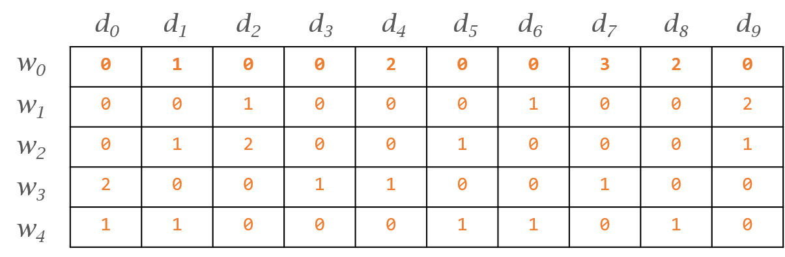
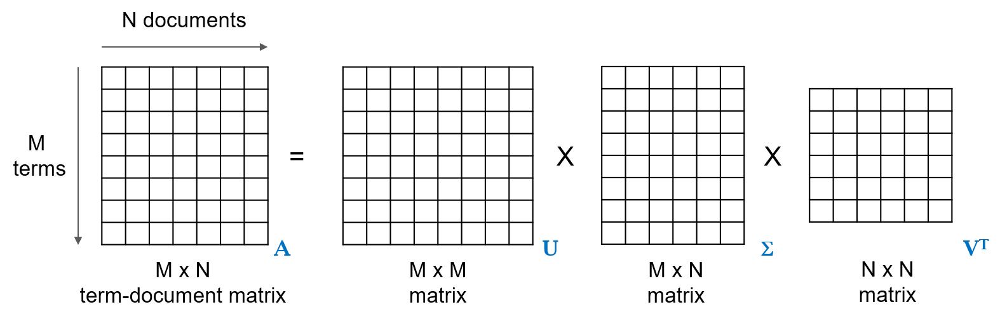
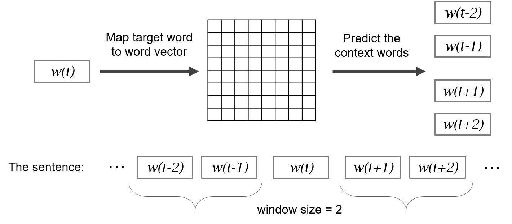
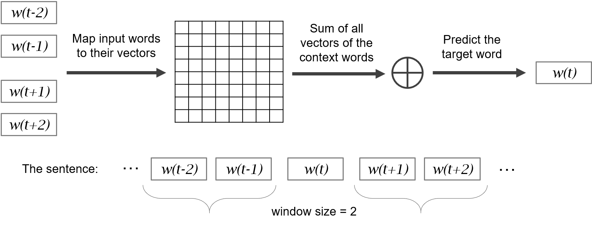
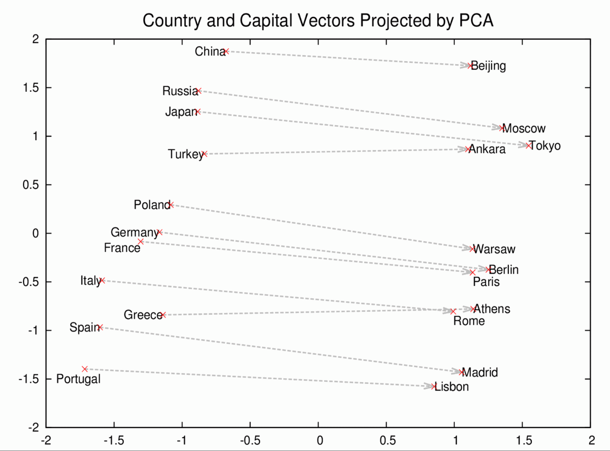
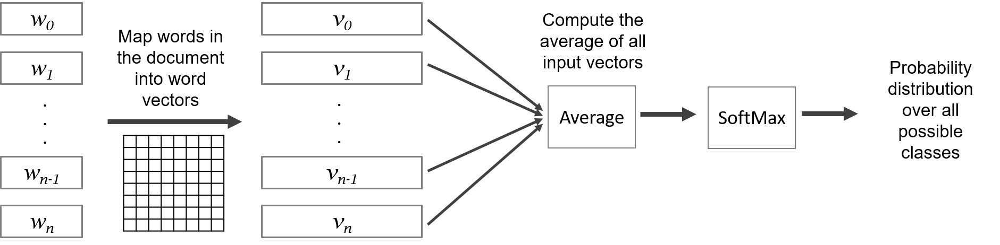
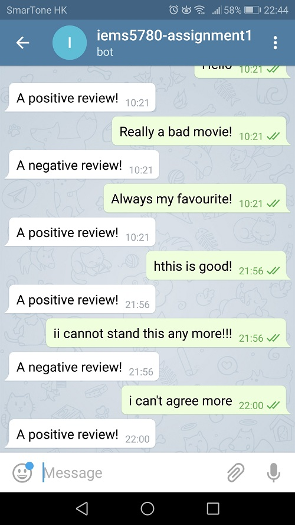

class: center, middle # IEMS 5780<br/>Building and Deploying Scalable<br/>Machine Learning Services ### Lecture 4 - Text Classification (2) #### Albert Au Yeung<br/>27th September, 2019 --- class: middle, center # Advanced Topics in Document Representation --- # Limitations * Bag-of-word (BoW) and vector space models are very commonly used in text classification * However, they has certain limitations: 1. Ignoring the **order** of the words - Consider `a tea bag` vs. `a bag of tea` 2. Ignoring the **context** of the words - "... take the earliest **train** tomorrow morning ..." - "... will **train** a new model tomorrow morning ..." 3. Ignoring **compound nouns** - `dress shirt` vs. `dress` 4. Do not handle words with **similar** meanings - `cellphones` vs. `smartphones` 5. Cannot handle **new words** --- # Advanced Topics * To address these problems, we will consider: - Consider **n-grams** - Consider **character n-grams** - Use **dimensionality reduction** techniques - **Word embeddings** --- class: center, middle # N-grams --- # N-grams * In our previous examples, we break a document into tokens, which are **individual words** * We call these tokens of individual words **unigrams** ```python sentence = "London is the capital and most populous city of England and the United Kingdom" sentence.lower().split(" ") # [ # 'london', 'is', 'the', 'capital', 'and', # 'most', 'populous', 'city', 'of', 'England', # 'and', 'the', 'united', 'kingdom' # ] ``` * In this example, it would be desirable to capture the existence of the phrase `United Kingdom` (both `united` and `kingdom` can appear separately and have different meanings) * Such kind of features may be **useful** when performing text classification --- # N-grams * Instead of treating every single token as a feature, we can also treat **every two consecutive pair of tokens** as a feature (i.e. **bi-grams**) ```python sentence = "London is the capital and most populous city of England and the United Kingdom" tokens = sentnce.lower().split(" ") bigrams = [] for i in range(len(tokens)-1): bigrams.append("{} {}".format(tokens[i], tokens[i+1])) # bigrams = [ # 'london is', # 'is the', # ... # 'the united', # 'united kingdom.' # ] ``` --- class: split # N-grams: Number of Features .column-left[ * Somtimes, we may also consider **tri-grams** or more * But be **cautious** when adding n-gram features * Using n-grams **significantly increase** the number of features - **More parameters** to learn in your model - May not give significant improvement but requires longer time to train<br/><br/> * (Right: number of features agains n-grams used for the SMS Spam dataset) ] .column-right[ <center>  </center> ] --- class: split # N-gram: Feature Sparsity .column-left[ * Another potential problem of using large n-grams is **data sparsity** * Each **n-gram** (other than unigrams) may only be found in very few documents * You are more likely to have **unseen n-grams** in the test data * You also will use up a lot of **memory** and **storage** <br/><br/> * (Right: Number of non-zero elements in all feature vectors for the SMS Spam dataset) ] .column-right[ <center>  </center> ] --- # N-gram * Given the advantages and disadvantages of n-gram features, **when** shall we use them? * Answering this usually requires **doing experiments**, and depends on the problem(s) at hand * Something to consider: - Do we see any **significant** or **desirable** increase in classification performance? - How much more **computing resources** are required (e.g. RAM) - **Time** required to train the model - Is the amount of data **large enough** to make the n-gram features meaningful? --- # Using N-gram in Scikit-learn * You can easily enable n-gram features when using the `CountVectorizer` or the `TfidfVectorizer` * Set the `ngram_range` parameter using a tuple (e.g. `(1, 3)` means that we want to use unigrams, bi-grams and tri-grams as features) ```python from sklearn.feature_extraction.text import CountVectorizer from sklearn.naive_bayes import MultinomialNB from sklearn.pipeline import Pipeline clf = Pipeline([ ('vec', CountVectorizer(ngram_range=(1, 3))), ('nb', MultinomialNB()) ]) clf.fit(X_train, y_train) ``` --- class: split # Character N-grams .column-left[ * In addition to n-grams of words, we sometimes may even consider **character n-grams** * Using character n-grams allow us to capture **sub-words** information * E.g. `compu` inside `computation` and `computer` may indicate that the input is about the same topic to a certain extent * A more general approach compared to **stemming** ] .column-right[ ```python # some character n-grams # for "an apple" { 'an', 'an ', 'ap', 'app', ... 'ppl', 'pple' } ``` ] --- # Character N-grams in Scikit-learn * You can also easily generate **character-level n-grams** in scikit-learn by setting the `analyzer` parameter * There are two different modes: `char` and `char_wb` - `char` treats the whole document as a string - `char_wb` generates n-grams that does NOT cross word boundaries ```python docs = [ "an apple" ] vectorizer = CountVectorizer(analyzer='char_wb', ngram_range=(2, 4)) vectorizer.fit(docs) vectorizer.vocabulary_ # {' a': 0, ' an': 1, ' an ': 2, ' ap': 3, ' app': 4, ... } # Note that n-grams on the edges of the words are padded with spaces ``` --- class: center, middle # Dimensionality Reduction --- # Dimensionality of Feature Vectors * **Feature vectors** in text classification are usually very long (**high dimensional**) - Commonly used words in the order of thousands - New words, names and abbreviations - Will be longer if we use **n-grams** * **Problems** of high dimensionality - Model is very complex - Models with many features require **a lot of data** to train - Require more **memory** during training/prediction - Require more **storage space** to persist the model * Hence, it is desirable if we can **represent the data with fewer dimensions** --- # Problems with Bag-of-Words Model * In additional to the problem of high dimensionality, the bag-of-words model also suffers from other problems * **Synonyms**: - Words with same or similar meanings occupy different dimensions - They are totally **orthogonal** in the vector space * Consider: $$ car = (0, 0, 0, 0, 0, 0, 1, 0, 0) \\\ vehicle = (0, 1, 0, 0, 0, 0, 0, 0, 0) $$ * Image two documents, one with the word `car`, another with the word `vehicle`, we can never tell that they are somehow related with the above representation. --- # Dimensionality Reduction * There are two major ways of finding dense vectors with fewer dimensions to represent words or documents * **Method 1: Co-occurrence** - Words that appears together tend to be similar - Converting a one-hot vector into a dense vector by finding **common topics** among words - Example: Latent Semantic Analysis * **Method 2: Context** - Words that have similar contexts are similar - Converting a one-hot vector into a dense vector by optimizing values in vector based on **similar contexts** - Example: Word embeddings --- # Distributional Representation * Counting **co-occurrence** between words allow us to understand how similar they are * Example: - "networking" usually appears with **protocols** - "football" usually appears with **goals** * Words having the same **probability distributions** are similar * We can then represent words and documents in terms of **topics** instead of high dimensional vectors <center> </center> --- class: split # Distributed Representation .column-left[ * Words having **similar context** are considered similar * Context refers to the words that **appear before and after** the target word * Example: - **"deep learning using GPU"**: "deep", "learning", "using" forms the context of "GPU" - **"Beijing is a city in China"** vs. **"Shanghai is a city in China"**: "Beijing" and "Shanghai" have similar contexts * We can optimize vectors of words such that words that have similar contexts have vectors **close** to each other ] .column-right[ <center> <img src="img/l4-distributed-representation.png" width="90%"/> </center> ] --- # Cosine Similarity * We can calculate **similarity** between two vectors using **cosine similarity** * It measures how **close** the two vectors' **directions** are $$ sim(v_1, v_2) = \cos(\theta) = \frac{v_1 \cdot v_2}{||v_1|| \times ||v_2||} $$ <br/> <center>  </center> --- # Cosine Similarity in Python * Example: computing similarity between documents ```python from numpy import array, dot from numpy.linalg import norm words = ["chinese", "medicine", "doctor", "food", "restaurants"] d1 = array([0.8, 0.9, 0.0, 0.1, 0.0]) # about chinese medicine d2 = array([0.0, 1.2, 1.5, 0.2, 0.0]) # about doctor & medicine d3 = array([1.3, 0.1, 0.0, 2.0, 1.5]) # about chinese food dot(d1, d2) / (norm(d1) * norm(d2)) # 0.47136989433874532 dot(d1, d3) / (norm(d1) * norm(d3)) # 0.39038367556371473 dot(d2, d3) / (norm(d2) * norm(d3)) # 0.09549164248532343 ``` --- class: middle, center # Latent Semantic Analysis (LSA) --- # Latent Semantic Analysis * One way to obtain a dense vector representation of words and documents is **latent semantic analysis** * Assume that we have a set of training data, in which we have **5 documents**, and our **vocabulary size is 10** * Using the bag-of-word model, we can represent this training data set as a **term-document matrix** <center>  </center> --- # Latent Semantic Analysis * LSA uses a mathematical tool called **singular value decomposition** to factorize the term-document matrix into **three** matrices * In `\(\Sigma\)`, the values on the diagonal are called *singular values**, which indicates how important the topics are in the data <br/> <center>  </center> --- # Latent Semantic Analysis * LSI tries to group **documents with similar words**, as well as **words that usually appear together** * Check the animation on [https://en.wikipedia.org/wiki/Latent_semantic_analysis](https://en.wikipedia.org/wiki/Latent_semantic_analysis) * These groups can be considered as some **topics** in the data * Intuitively, the number of **topics** should be fewer than the number of **words** * We can then use **topics** to represent words and documents --- # Latent Semantic Analysis * After the decomposition, the size of `\(\Sigma\)` actually represents **the number of topics** that can be found in the data (it is always smaller or equal to the number of words) * However, some topics may only be noise (words that appear less frequently and are not able to be grouped) * To reduce the dimension of the data, we can choose only to keep the **top `\(k\)`** singular values, and to represent words and documents using the **`\(k\)` dimensions** $$ \text{Document in reduced dimension} = U_k \Sigma_k V^T_k $$ --- # Example * Let's consider running LSA on a simple data set ```python # We have four documents as below docs = [ "chinese medicine doctor", # about chinese medicie "chinese companies stock price", # about stock price of chinese companies "medicine doctor hospital", # about medicine "stock market option price" # about stock market ] ``` --- # Performing SVD in Python * Singular value decomposition can be done using the function `scipy.linalg.svd` in the SciPy package ([documentation](https://docs.scipy.org/doc/scipy/reference/generated/scipy.linalg.svd.html)) * It returns the matrices `\(U\)` and `\(V\)`, as well as the singular values ```python from sklearn.feature_extraction.text import CounterVectorizer from scipy.linalg import svd vectorizer = CountVectorizer() A = vectorizer.fit_transform(docs) A.vocabulary_ # {'chinese': 0, 'companies': 1, 'doctor': 2, 'hospital': 3, 'market': 4, # 'medicine': 5, 'option': 6, 'price': 7, 'stock': 8} U, ss, V = svd(A.todense().transpose(), full_matrices=True) ``` --- # Performing SVD in Python ```python U = array([[-0.41, 0.21, -0.54, -0.41, 0.35, -0.21, 0.35, 0.16, 0.16], [-0.27, -0.08, -0.43, 0.39, 0.05, 0.17, 0.05, -0.52, -0.52], [-0.22, 0.58, 0.15, -0.09, -0.32, -0.55, -0.32, -0.2 , -0.2 ], [-0.08, 0.3 , 0.26, 0.71, 0.35, -0.21, 0.35, 0.16, 0.16], [-0.24, -0.17, 0.45, -0.24, 0.7 , -0.02, -0.3 , -0.18, -0.18], [-0.22, 0.58, 0.15, -0.09, -0.03, 0.76, -0.03, 0.04, 0.04], [-0.24, -0.17, 0.45, -0.24, -0.3 , -0.02, 0.7 , -0.18, -0.18], [-0.52, -0.25, 0.03, 0.15, -0.2 , 0.02, -0.2 , 0.68, -0.32], [-0.52, -0.25, 0.03, 0.15, -0.2 , 0.02, -0.2 , -0.32, 0.68]]) ss = array([2.5 , 2.21, 1.46, 0.86]) V = array([[-0.34, -0.69, -0.21, -0.61], [ 0.62, -0.17, 0.66, -0.38], [-0.17, -0.62, 0.38, 0.66], [-0.69, 0.34, 0.61, -0.21]]) ``` --- # Latent Semantic Analysis * You can also perform latent semantic analysis easily using the `TruncatedSVD` class in scikit-learn ```python from sklearn.feature_extraction.text import CountVectorizer from sklearn.decomposition import TruncatedSVD vectorizer = CountVectorizer() X = vectorizer.fit_transform(docs) # X is a term-document matrix (transposed) svd = TruncatedSVD(n_components=2) # Apply SVD on the matrix, keep 2 dimensions svd.fit(X) ``` --- # Latent Semantic Analysis * Now the `svd` model can be used to transform the documents ```python for doc, (i, j) in enumerate(svd.transform(X)): print("Doc {}: ({:7.3f}, {:7.3f})".format(doc+1, i, j)) # Prints the following: # Doc 1: ( 0.846, 1.370) # Doc 2: ( 1.720, -0.368) # Doc 3: ( 0.519, 1.465) # Doc 4: ( 1.522, -0.845) # The documents for reference # docs = [ # "chinese medicine doctor", # about chinese medicie # "chinese companies stock price", # about stock price of chinese companies # "medicine doctor hospital", # about medicine # "stock market option price" # about stock market # ] ``` --- class: middle, center # Word Embeddings --- # Word Embeddings * Word vectors or embeddings are **dense vector** representation of words * A type of **distributed representation** of words * Word embeddings can be obtained by trainnig a neural network on a large corpus of text data * Training samples are genrated from the corpus usually using a **sliding window** to define contexts * Commonly used algorithms: - Word2Vec [https://code.google.com/archive/p/word2vec/](https://code.google.com/archive/p/word2vec/) - GloVe [https://nlp.stanford.edu/projects/glove/](https://nlp.stanford.edu/projects/glove/) - fastText [https://fasttext.cc/](https://fasttext.cc/) --- # Introduction to Word2Vec * **Basic idea**: A word's meaning is given by the words that frequently appear around it * For a word `\(w\)` in a document, its context is the set of words that appear near it * **"Near"** can be defined by a **sliding window of certain size** * Word2vec ([Mikolov et al. 2013](https://arxiv.org/abs/1310.4546)) is an algorithm for learning word vectors <br/> <center> </center> --- # Word2Vec * Word2vec obtains word embeddings by creating a new way of **supervised training** out of **unlabelled** data * **Basic concept**: - Assume that we have a vocabulary of size `\(N\)` - For each word in this vocabulary, we initialize a random vector of dimension `\(D\)`<br/>(Usually `\(D\)` is about 100 to 300) - For each context window, we compute the **probability** of **each context word** given the **target word** using the **similarity** between their vectors - We keep adjusting the values of the vectors to maximize these probabilities --- # Word2Vec * It turns out that **training** word vectors can be done using a neural network * To train a neural network in a supervised way, we need to have some labelled data * There are two ways to train a word vectors: 1. **Skip-gram (SG)** - For each context window, the **target word** (or **center word**) is the **input** - The **context words** on the left and right are the **output** 2. **Continuous Bag of Words (CBoW)** - For each context window, the **context words** are the **input** - The **target word** is the **output** --- # Skip-gram Mode * In the Skip-gram mode, the neural network is trained by using the **target word as input**, and the **context words as output** * Task: train the model to output most likely context words given a target word <center>  </center> --- # Continuous Bag-of-Words Mode * In the CBoW mode, the neural network is trained by using the **context words as input**, and the **target word as output** * Task: using the context words to **predict** which would be the missing target word <center>  </center> --- # Word Embeddings * The trained word vectors show some interesting characteristics <center>  </center> Ref: [Distributed Representations of Words and Phrases and their Compositionality](https://arxiv.org/abs/1310.4546) (Mikolov et. al 2013) --- # Word2Vec in Python * You can play with word vectors using the [`gensim` Python package](https://radimrehurek.com/gensim/) * Obtain **pre-trained word vectors** from [https://drive.google.com/file/d/0B7XkCwpI5KDYNlNUTTlSS21pQmM/edit?usp=sharing](https://drive.google.com/file/d/0B7XkCwpI5KDYNlNUTTlSS21pQmM/edit?usp=sharing) (Note: the file is 1.5GB compressed) ```python from gensim.models.KeyedVectors import load_word2vec_format model = load_word2vec_format('GoogleNews-vectors-negative300.bin', binary=True) # Get vector similarity model.similarity("big", "huge") # Get the vector of the word "great" (a 300-d vector) model["great"] # Find another word that is most similar to the given words model.most_similar(["apple", "orange"]) ``` --- class: middle, center # fastText --- # fastText * [fastText](https://fasttext.cc/) is a library for **text classification** and **representation learning** * An efficient implementation of a shallow neural network for text classification using word embeddings * Comes with command line programs for training, testing and generating predictions * **Python API** available * Functions - Supervised learning: support **multi-class** classification - Unsupervised learning: learning **word embeddings** from input texts --- # fastText * **Supervised learning**: fastText can be used to train a text classification model for **binary** or **multi-class** classification * The model is a shallow **neural network**, which first converts n-grams into **word embeddings**, takes the **average** of the vectors, and passes that to a **softmax** function to generate predictions * Ref: [Bag of Tricks for Efficient Text Classification](https://arxiv.org/abs/1607.01759)<br/><br/> * *"We can train fastText on more than one billion words in less than ten minutes using a standard multicore-CPU, and classify half a million sentences among 312K classes in less than a minute."* --- # fastText * The **softmax function** is a generalized **logistic function**, it converts a vector of real values into another vector whose entries have values ranges from **0 to 1**, and all the entries **sum to 1** $$ \sigma(\mathbf{z})_j = \frac{e^{z_j}}{\sum{e^{z_i}}} $$ <br/> <center>  </center> --- # fastText * The **word embedding** layer can be **trained** using the training data, or can be initialized with **pre-trained word vectors** * Example of pre-trained vectors: [https://github.com/facebookresearch/fastText/blob/master/pretrained-vectors.md](https://github.com/facebookresearch/fastText/blob/master/pretrained-vectors.md) ```python 香港 0.45552 -0.15176 -0.1004 0.24804 -0.27378 -0.11551 -0.020922 ... 英國 0.46771 0.047616 -0.28287 0.52437 0.34216 -0.1907 0.28798 ... 足球隊 -0.15141 -0.26691 -0.22635 0.19575 0.32993 -0.45426 -0.24766 ... 足球 -0.37035 -0.27073 -0.033765 0.4996 0.62468 -0.35905 -0.087886 ... ``` ```python soccer -0.27709 -0.42679 0.070863 0.64454 0.17607 -0.27767 0.031067 ... football -0.52819 -0.39955 -0.014546 0.22658 0.13472 -0.48197 0.17063 ... country -0.025361 -0.26752 0.35494 0.081725 -0.022434 -0.030652 -0.15959 ... bicycle 0.063549 0.032542 -0.019717 0.1974 -0.11146 -0.3778 0.059583 ... ``` --- # fastText * To try a text classifier using fastText, you need to preprocess your data into a specific format: - Each line contains a single document - The label (class) of the document should have the prefix `__label__` * Note that all symbols and punctunations will be preserved (texts are tokenized using spaces or tabs) * For example: ```html __label__sports top 100 nba players for 2018-19 __label__finance stock market update: over 150 stocks hit 52-week lows on NSE __label__travel gap year holidays: 11 reasons to take a year off to travel in your 30s ... ``` --- # fastText in Python * Assuming that your training data is stored in a file named `train.txt` ```python from fastText import train_supervised # import the supervised training function model = train_supervised( input="train.txt", # training data file epoch=25, # epoch: number of times going through the data lr=1.0, # learning rate wordNgrams=2, # n-gram features verbose=2, # whether to print out more messages minCount=1 # minimum number of times a token should appear ) model.save_model("model.bin") # save model to a file named "model.bin" ``` * Refer to the [full documentaton](https://github.com/facebookresearch/fastText#full-documentation) for the list of parameters --- # fastText in Python * Predicting using fastText ```python from fastText import load_model # load a trained model named "model.bin" model = load_model("model.bin") # text data text = "Manchester United revenues hit record of £590m" # Ask for the top 2 predicted classes labels, scores = model.predict(text, k=2) # labels is a tuple of labels e.g. (('__label__sports', '__label__finance')) # scores is an array of scores e.g. array([0.9997472, 0.0000234]) ``` --- class: middle, center # Assignment 1 --- # Assignment 1 * [Text classification + Telegram Bot](https://iems5780.github.io/1819t1/assignments/assignment-1.html) * Deadline: 19th October, 2019 (Saturday) * Two tasks: 1. Train a **text classifier** for movie review classification 2. Deploy the text classifier as a **Telegram Bot** --- class: split # Assignment 1 .column-left[ * **Task 1** * Train classifier using 1) **naive Bayes**, 2) **logistic regression**, 3) **fastText** * Submit a **Jupyter notebook** with all the steps and results * **Task 2** * Make your model available to other people via **Telegram** * Write a script that keeps receiving message from users, and use the model to generate predictions ] .column-right[ <center>  </center> ] --- # References * Application of text classification:<br/>[Globally Scalable Web Document Classification Using Word2Vec](https://www.slideshare.net/kouheinakaji/smart-news-documentclassification)<br/> (From [SmartNews](https://www.smartnews.com/)) --- class: center, middle # End of Lecture 4